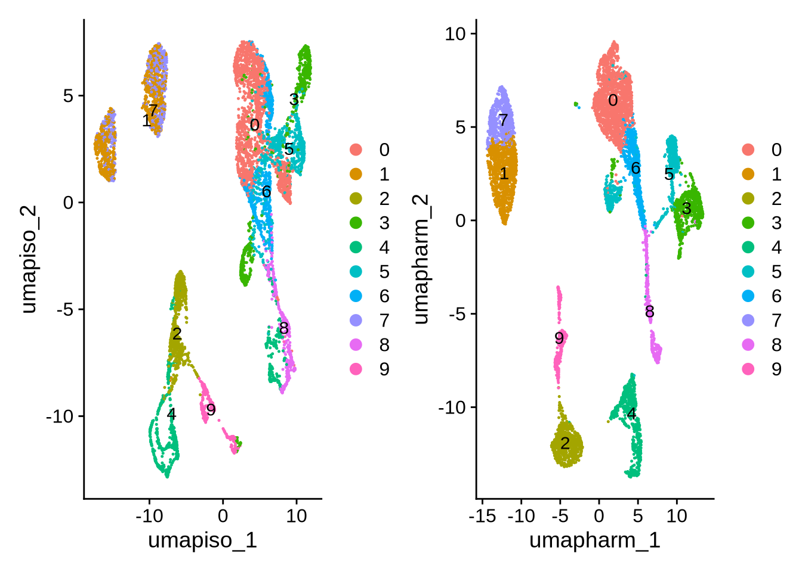
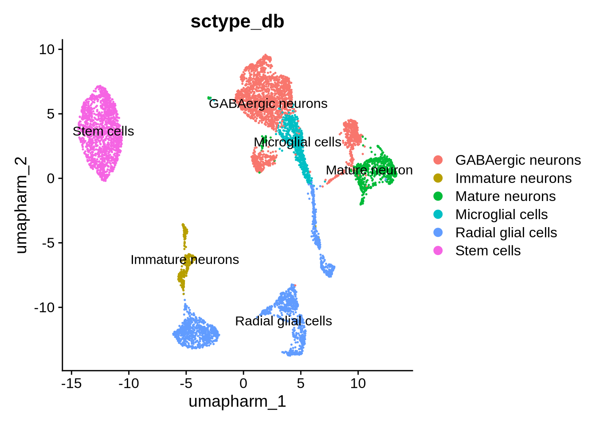

Chapter 10 Add isoform counts
Now we can add isoform level information to the merged Seurat object. When doing this you may need to convert the oafish files into a count.csv file the row names in the ENSTID_gene_symbol ID form. The function to do so can be found here @ref(Convert Oarfish files to count matrix)
The workflow follows these steps.
- Create a Seurat object per sample
- Merge the objects together
- Filter the isoform merged object based on cell types that are high quality (based on gene level filtering)
- Add the isoform filtered and merged object to the gene level object as a new assay
- Integration on the isoform assay is possible but not shown here.
Code
############ read in count matix and add isoform assay to Seurat object #########
# Define sample names
sample_names <- c("C1_STC", "C4_STC", "C2_Day25", "C5_Day25", "C2_Day55", "C3_Day55", "C3_Day80", "C5_Day80")
#Make Seurat objects not filtered
# Function to read a CSV file and create a Seurat object
create_seurat_object <- function(sample_name, input_dir, project_name) {
# Construct file path
file_path <- file.path(input_dir, paste0("gene_symbol_oarfish_", sample_name, "_counts.csv"))
# Read the CSV file
counts <- fread(file_path)
counts <- as.data.frame(counts)
rownames(counts) <- counts[[1]] # Set row names from the first column
counts[[1]] <- NULL
# Create the Seurat object
seurat_obj <- CreateSeuratObject(counts = counts, project = project_name, min.cells = 5, min.features = 500)
return(seurat_obj)
}
# Directory where the CSV files are stored
input_directory <- "./output_files/mutli_sample/oarfish_counts/"
# Create an empty list to store Seurat objects
iso_seurat_objects <- list()
total_samples <- length(sample_names)
for (i in seq_along(sample_names)) {
sample <- sample_names[i]
message(sprintf("Processing sample %d of %d: %s", i, total_samples, sample))
iso_seurat_objects[[sample]] <- create_seurat_object(
sample_name = sample,
input_dir = input_directory,
project_name = sample
)
}
####### Merge the samples into one object ######
iso.merged_seurat <- merge(
iso_seurat_objects[["C1_STC"]],
y = list(
iso_seurat_objects[["C4_STC"]],
iso_seurat_objects[["C2_Day25"]],
iso_seurat_objects[["C5_Day25"]],
iso_seurat_objects[["C2_Day55"]],
iso_seurat_objects[["C3_Day55"]],
iso_seurat_objects[["C3_Day80"]],
iso_seurat_objects[["C5_Day80"]]
),
add.cell.ids = c(
"C1_STC", "C4_STC", "C2_Day25", "C5_Day25",
"C2_Day55", "C3_Day55", "C3_Day80", "C5_Day80"
),
project = "iso-Multi-sample_tutorial"
)
# create a sample column
iso.merged_seurat$sample <- rownames(iso.merged_seurat@meta.data)
## split sample column to makw a batch col
iso.merged_seurat@meta.data <- separate(iso.merged_seurat@meta.data, col = 'sample', into = c('batch', 'Day', 'Barcode'),
sep = '_')
#### rember to laod in the correct seurat object #####
## filter the data to iso and gene cells match
merged_seurat_isoform_filtered <- subset(iso.merged_seurat, cells =obj@graphs[["RNA_nn"]]@Dimnames[[1]])
VlnPlot(merged_seurat_isoform_filtered, features = c("nFeature_RNA", "nCount_RNA", "percent.mt"), ncol = 3)
# perform standard workflow steps
merged_seurat_isoform_filtered <- NormalizeData(object = merged_seurat_isoform_filtered) # if using SCT dont run this
merged_seurat_isoform_filtered <- FindVariableFeatures(object = merged_seurat_isoform_filtered) # if using SCT dont run this
merged_seurat_isoform_filtered <- ScaleData(object = merged_seurat_isoform_filtered) # if using SCT dont run this
merged_seurat_isoform_filtered <- RunPCA(object = merged_seurat_isoform_filtered)
ElbowPlot(merged_seurat_isoform_filtered)
merged_seurat_isoform_filtered <- FindNeighbors(object = merged_seurat_isoform_filtered, dims = 1:10)
merged_seurat_isoform_filtered <- FindClusters(object = merged_seurat_isoform_filtered, resolution = 0.6)
merged_seurat_isoform_filtered <- RunUMAP(object = merged_seurat_isoform_filtered, dims = 1:10)
#Save file
#saveRDS(merged_seurat_isoform_filtered, file = "./output_files/mutli_sample/merged_seurat_isoform_filtered.rds")Code
readRDS(merged_seurat_isoform_filtered, file = "./output_files/mutli_sample/merged_seurat_isoform_filtered.rds")## An object of class Seurat
## 163280 features across 7216 samples within 1 assay
## Active assay: RNA (163280 features, 2000 variable features)
## 3 layers present: data, counts, scale.data
## 2 dimensional reductions calculated: pca, umapCode
######### ########
#plots
p5 <- DimPlot(merged_seurat_isoform_filtered, reduction = 'umap', group.by = 'orig.ident')
p6 <- DimPlot(merged_seurat_isoform_filtered, reduction = 'umap', group.by = 'Day')
p7 <- FeaturePlot(merged_seurat_isoform_filtered, reduction = 'umap', features = 'nCount_RNA')
p8 <- FeaturePlot(merged_seurat_isoform_filtered, reduction = "umap", features = 'nFeature_RNA')
grid.arrange(p5, p6, p7, p8, ncol = 2)
Code
#####
merged_seurat_isoform_filtered <- JoinLayers(merged_seurat_isoform_filtered)
counts_table <- merged_seurat_isoform_filtered[["RNA"]]$counts
obj[["iso"]] <- CreateAssay5Object(counts = counts_table)
# Step 1: Normalize the new assay data
obj <- NormalizeData(obj, assay = "iso")## Normalizing layer: countsCode
obj <- FindVariableFeatures(obj, assay = "iso")## Finding variable features for layer countsCode
obj <- ScaleData(obj, assay = "iso")## Centering and scaling data matrixCode
# Step 4: Perform PCA
obj <- RunPCA(obj, assay = "iso", reduction.name = "pca_iso")## PC_ 1
## Positive: ENST00000430027.3-DLX6-AS1, ENST00000303177.8-NSG2, ENST00000220876.12-STMN2, ENST00000304886.6-SNAP25, ENST00000367816.5-ATP1B1, ENST00000704697.1-SYT1, ENST00000373489.10-PBX3, ENST00000305124.11-GAP43, ENST00000249330.3-VGF, ENST00000261205.9-SYT1
## ENST00000482108.1-PEG10, ENST00000420428.7-CELF4, ENST00000651844.1-COPG2IT1, ENST00000635795.1-DCX, ENST00000636035.2-DCX, ENST00000526355.7-GUCY1A2, ENST00000458352.5-DLX6-AS1, ENST00000360351.8-MAP2, ENST00000393658.7-GPM6A, ENST00000281523.8-ZNF385D
## ENST00000263630.13-CCDC88A, ENST00000381620.9-GABRA2, ENST00000259271.7-GAD2, ENST00000610778.1-ENSG00000274422, ENST00000682079.1-MAP2, ENST00000284292.11-NRGN, ENST00000264426.14-GRIA2, ENST00000302277.7-ZNF804A, ENST00000285900.10-GRIA1, ENST00000436346.7-CCDC88A
## Negative: ENST00000259915.13-POU5F1, ENST00000613865.5-RPS24, ENST00000335658.7-DPPA4, ENST00000252486.9-APOE, ENST00000396210.8-MGST1, ENST00000372692.8-SET, ENST00000498273.2-L1TD1, ENST00000228251.9-YBX3, ENST00000276602.10-TERF1, ENST00000301072.11-TUBA1C
## ENST00000296145.6-CRIPTO, ENST00000295830.13-RPL22L1, ENST00000326279.11-LIN28A, ENST00000223271.8-RARRES2, ENST00000308987.6-CKS1B, ENST00000314355.7-CKS2, ENST00000329305.6-TPM2, ENST00000282561.4-GJA1, ENST00000396925.1-CLDN6, ENST00000271638.3-S100A11
## ENST00000258499.8-USP44, ENST00000316660.7-PMAIP1, ENST00000388835.4-KRT18, ENST00000319248.13-PRDX1, ENST00000374561.6-ID3, ENST00000265643.4-GAL, ENST00000473291.1-HHLA1, ENST00000377962.8-CNMD, ENST00000383763.6-TRIM71, ENST00000261769.10-CDH1
## PC_ 2
## Positive: ENST00000544301.7-VIM, ENST00000368444.8-FABP7, ENST00000373615.9-LHX2, ENST00000376530.8-TTYH1, ENST00000282928.5-ZIC1, ENST00000357727.7-CREB5, ENST00000380518.8-COL2A1, ENST00000296503.10-HMGB2, ENST00000454729.3-PANTR1, ENST00000245479.3-SOX9
## ENST00000443988.8-PANTR1, ENST00000381192.10-CD99, ENST00000395566.9-MDK, ENST00000301905.9-PBK, ENST00000553456.5-EMX2, ENST00000399387.9-LINC01551, ENST00000295113.5-FRZB, ENST00000344113.8-SYNE2, ENST00000376925.8-CST3, ENST00000341267.9-DLK1
## ENST00000378453.4-HES5, ENST00000718304.1-HMGN2, ENST00000439742.7-MXD3, ENST00000358025.7-SYNE2, ENST00000568223.7-METRN, ENST00000319420.4-SHISA2, ENST00000362074.8-NOTCH2NLA, ENST00000378700.8-ID4, ENST00000445125.2-ENSG00000225840, ENST00000530167.2-H2AX
## Negative: ENST00000303177.8-NSG2, ENST00000263735.9-EPCAM, ENST00000388948.8-LRRK1, ENST00000304886.6-SNAP25, ENST00000367816.5-ATP1B1, ENST00000259915.13-POU5F1, ENST00000613865.5-RPS24, ENST00000249330.3-VGF, ENST00000261205.9-SYT1, ENST00000473291.1-HHLA1
## ENST00000296145.6-CRIPTO, ENST00000404735.1-RPS27A, ENST00000299529.7-CRABP1, ENST00000316902.12-SLC7A8, ENST00000498273.2-L1TD1, ENST00000276602.10-TERF1, ENST00000265643.4-GAL, ENST00000420428.7-CELF4, ENST00000396925.1-CLDN6, ENST00000396210.8-MGST1
## ENST00000373489.10-PBX3, ENST00000261769.10-CDH1, ENST00000505215.4-MIR302CHG, ENST00000373713.7-FABP3, ENST00000377962.8-CNMD, ENST00000731552.1-MIR302CHG, ENST00000326279.11-LIN28A, ENST00000383763.6-TRIM71, ENST00000256362.5-VRTN, ENST00000381620.9-GABRA2
## PC_ 3
## Positive: ENST00000341267.9-DLK1, ENST00000368222.8-CRABP2, ENST00000445125.2-ENSG00000225840, ENST00000319420.4-SHISA2, ENST00000295113.5-FRZB, ENST00000627981.1-ENSG00000281181, ENST00000625598.1-ENSG00000280614, ENST00000631211.1-ENSG00000280800, ENST00000553456.5-EMX2, ENST00000373615.9-LHX2
## ENST00000282928.5-ZIC1, BambuTx4122-ENSG00000286149, ENST00000325870.3-DMRTA1, ENST00000399387.9-LINC01551, ENST00000393957.7-TPPP3, ENST00000340857.4-H1-0, ENST00000474034.1-ZIC1, ENST00000331224.10-DLK1, ENST00000330233.11-CRIP1, ENST00000356545.7-RSPO1
## ENST00000582401.6-TXNIP, ENST00000693335.1-GNG8, ENST00000649451.1-NNAT, ENST00000377028.10-DCT, ENST00000606645.4-ENSG00000272449, ENST00000422447.8-LDHA, ENST00000252506.11-GADD45G, ENST00000614247.2-H4C4, ENST00000366756.4-DLL1, ENST00000383075.8-ZIC4
## Negative: ENST00000350763.9-TNC, ENST00000403491.8-NFIA, ENST00000554144.5-HOPX, ENST00000337881.12-HOPX, ENST00000603233.2-NFIA, ENST00000329117.10-BCAN, ENST00000681775.1-SLC1A3, ENST00000624112.2-SLC1A3, ENST00000262593.10-DOK5, ENST00000395882.6-NTRK2
## ENST00000367963.8-MOXD1, ENST00000265113.9-SLC1A3, ENST00000453190.7-LIFR, ENST00000454189.7-GPM6B, ENST00000371941.4-PREX1, ENST00000578921.6-RAB31, ENST00000557010.5-DIO2, ENST00000329203.5-FAM181B, ENST00000296506.8-SCRG1, ENST00000273261.8-LRIG1
## ENST00000286657.10-ADAMTS3, ENST00000242152.7-NPY, ENST00000360472.9-PEA15, ENST00000418533.6-LTBP1, ENST00000680205.1-SLC1A3, ENST00000265071.3-CDH6, ENST00000438257.9-DIO2, ENST00000680064.1-SLC1A3, ENST00000246070.3-LAMP5, ENST00000517956.5-FBXO32
## PC_ 4
## Positive: ENST00000693335.1-GNG8, ENST00000341267.9-DLK1, ENST00000376925.8-CST3, ENST00000395566.9-MDK, ENST00000355852.6-PCBP4, ENST00000393957.7-TPPP3, ENST00000633531.1-PON2, ENST00000325870.3-DMRTA1, ENST00000445125.2-ENSG00000225840, ENST00000331224.10-DLK1
## ENST00000631211.1-ENSG00000280800, ENST00000625598.1-ENSG00000280614, ENST00000550697.6-MYL6, ENST00000368222.8-CRABP2, ENST00000378700.8-ID4, ENST00000627981.1-ENSG00000281181, ENST00000442544.7-DCC, ENST00000649451.1-NNAT, ENST00000440480.8-CDKN1C, ENST00000368444.8-FABP7
## ENST00000544301.7-VIM, ENST00000659034.4-LINC02609, ENST00000252506.11-GADD45G, ENST00000551357.4-LHX5-AS1, BambuTx4122-ENSG00000286149, ENST00000501122.3-NEAT1, ENST00000389554.8-TBR1, ENST00000234091.8-ID2, ENST00000606645.4-ENSG00000272449, ENST00000428101.6-LMO1
## Negative: ENST00000439742.7-MXD3, ENST00000271452.8-NUF2, ENST00000368654.8-MKI67, ENST00000301905.9-PBK, ENST00000366999.9-NEK2, ENST00000380026.8-CENPE, ENST00000394249.8-PRC1, ENST00000423485.6-TOP2A, ENST00000538862.7-CDCA3, ENST00000414849.6-NUSAP1
## ENST00000372224.9-KIF2C, ENST00000454366.2-GTSE1, ENST00000260359.10-NUSAP1, ENST00000335756.9-CENPA, ENST00000357799.9-SGO2, ENST00000356455.9-UBE2C, ENST00000367409.9-ASPM, ENST00000366955.8-CENPF, ENST00000232458.9-ECT2, ENST00000300403.11-TPX2
## ENST00000399668.7-KNL1, ENST00000340384.5-TUBB4B, ENST00000313288.9-TACC3, ENST00000335183.11-CDKN3, ENST00000373055.6-CDCA8, ENST00000302450.11-CKAP2L, ENST00000300093.9-PLK1, ENST00000400889.3-FAM72D, ENST00000264552.14-UBE2S, ENST00000310955.11-CDC20
## PC_ 5
## Positive: ENST00000318789.11-FOXP1, ENST00000295156.9-VSNL1, ENST00000372524.5-ZNF503, ENST00000313708.11-EBF1, ENST00000241416.12-ACVR2A, ENST00000521268.6-RALYL, ENST00000370544.10-LMO4, ENST00000525166.6-FAT3, ENST00000649528.3-FOXP1, ENST00000482108.1-PEG10
## ENST00000488574.5-PEG10, ENST00000406316.6-NRXN1, ENST00000305124.11-GAP43, ENST00000255224.8-SYT4, ENST00000490035.7-LSAMP, ENST00000641206.2-ZFHX3, ENST00000260653.5-SIX3, ENST00000230658.12-ISL1, ENST00000435030.6-KIF5C, ENST00000394480.6-NTRK3
## ENST00000265840.12-ELMOD1, ENST00000623230.1-ENSG00000279814, ENST00000397463.3-LYPD1, ENST00000651372.2-ZFHX4, ENST00000274289.8-PLK2, ENST00000287641.4-SST, ENST00000265361.8-SEMA3C, ENST00000629765.3-NTRK3, ENST00000233813.5-IGFBP5, ENST00000376544.7-TLE4
## Negative: ENST00000377049.4-CORT, ENST00000315087.12-ST8SIA5, ENST00000295101.3-KCNJ3, ENST00000274382.9-LIX1, ENST00000295894.9-SYNPR, ENST00000478300.6-SYNPR, ENST00000338037.11-PLCB1, ENST00000377961.3-SCGN, ENST00000302005.3-HSPB3, ENST00000758276.1-MIR9-1HG
## ENST00000309950.8-DAPL1, ENST00000397016.6-CPNE6, ENST00000537691.5-CPNE6, ENST00000497824.6-MIR9-1HG, ENST00000636471.1-ZEB2, ENST00000451755.2-ENSG00000235431, ENST00000627532.3-ZEB2, ENST00000392056.8-SPHKAP, ENST00000436346.7-CCDC88A, ENST00000841000.1-LINC03112
## ENST00000281523.8-ZNF385D, ENST00000409343.5-ZNF385B, ENST00000382496.10-SEMA5A, ENST00000361725.5-DLX1, ENST00000373713.7-FABP3, ENST00000315930.11-FGF13, ENST00000264426.14-GRIA2, ENST00000400991.8-MIR9-1HG, ENST00000445907.6-CHRM2, ENST00000402395.5-SELENOM## Warning: Key 'PC_' taken, using 'pcaiso_' insteadCode
# Step 5: Run UMAP
obj <- RunUMAP(obj, reduction = "pca_iso", dims = 1:20, assay = "iso", reduction.name = "umap_iso")## 16:26:35 UMAP embedding parameters a = 0.9922 b = 1.112## 16:26:35 Read 7216 rows and found 20 numeric columns## 16:26:35 Using Annoy for neighbor search, n_neighbors = 30## 16:26:35 Building Annoy index with metric = cosine, n_trees = 50## 0% 10 20 30 40 50 60 70 80 90 100%## [----|----|----|----|----|----|----|----|----|----|## **************************************************|
## 16:26:36 Writing NN index file to temp file /tmp/RtmpFLSb7W/file2ef735d52bc25
## 16:26:36 Searching Annoy index using 1 thread, search_k = 3000
## 16:26:37 Annoy recall = 100%
## 16:26:39 Commencing smooth kNN distance calibration using 1 thread with target n_neighbors = 30
## 16:26:42 Found 2 connected components, falling back to 'spca' initialization with init_sdev = 1
## 16:26:42 Using 'irlba' for PCA
## 16:26:42 PCA: 2 components explained 47.78% variance
## 16:26:42 Scaling init to sdev = 1
## 16:26:42 Commencing optimization for 500 epochs, with 283368 positive edges
## 16:26:49 Optimization finishedCode
# Visualize the UMAP
DimPlot(obj, label = TRUE, reduction = "umap_iso") | DimPlot(obj, label = TRUE, reduction = "umap.harm")
Here will annotate the cell types using the sctype and some prior knowledge.
Code
gs_removal_list <- c("Tanycytes", "Dopaminergic neurons", "Oligodendrocyte precursor cells", "Non myelinating Schwann cells", "Endothelial cells")
# list of cell types from the db to remove
obj <- perform_sctype_analysis(obj, db_, tissue, gs_removal_list,
metadat_col_prefix ="sctype_db", figure_prefix = "multi",
output_file = "multi", cluster_res = "harm_cluster", reduction = "umap.harm")## # A tibble: 12 3
## # Groups: cluster [12]
## cluster type scores
## <fct> <chr> <dbl>
## 1 2 Cancer stem cells 873.
## 2 4 Cancer stem cells 659.
## 3 5 Radial glial cells 1124.
## 4 3 Radial glial cells 929.
## 5 9 Immature neurons 480.
## 6 6 Mature neurons 951.
## 7 1 GABAergic neurons 616.
## 8 0 GABAergic neurons 688.
## 9 11 Schwann precursor cells 37.3
## 10 7 GABAergic neurons 825.
## 11 8 Microglial cells 419.
## 12 10 Radial glial cells 1333.
Code
#change name of cancer stem cell to stem cell
obj@meta.data$sctype_db <- gsub("Cancer stem cells", "Stem cells", obj@meta.data$sctype_db)
DimPlot(obj, reduction="umap.harm", group.by = "sctype_db", label = T)
Code
#saveRDS(obj, file = "./output_files/mutli_sample/multisample_seurat.intergrated_harm.isofrom.rds")